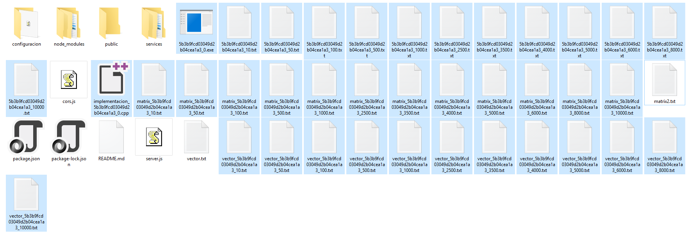

<div class="content-inicio">
  <div class="jumbotron">
      <h1 class="display-4 title-inicio">
        
        Júpiter - Sistema Continuo
      </h1>
      <h2 class="font-weight-light title-inicio" >Final de Sistemas Distribuidos y Paralelos - LSI</h2>
      <hr class="my-4">
      
      <h3>1 - Introducci&oacute;n</h3>
      <p>
        La idea principal de desarrollar Júpiter fue primero que nada construir una plataforma escalable donde se pudiera compilar, ejecutar y parametrizar distintas implementaciones de algoritmos. Esto es implementarlo en diferentes arquitecturas como MPI, OPENMP, CUDA, H&Iacute;BRIDO, ETC. 
      </p>
      <p>Además de ello servir como guía y base para aplicar conceptos de Sistemas Distribuidos y Paralelos de forma práctica, tanto como el manejo de un cluster como en la implementacion de políticas de balanceo de carga, detección de errores y demás. Nuestra idea principal era por cuestiones de tiempo, implementar la arquitectura de la aplicación mencionada de forma clara y que este mismo documento HTML sirviera como guía para una rápida comprensión
        de esta arquitectura y así poder escalarla de forma rápida, esto es: agregar funcionalides, mejorarla y extenderla de forma indefinida. Esta extensión tiene como principal objetivo, el aumentar las funcionalidades de la aplicación así como la comprensión de conceptos.
      </p>
      <br>
      <h3>2 - Objetivo del Programa</h3>
      <p>
        El programa esta pensado principalmente para ser usado con fines pedagógicos, se sugiere el planteo de actividades donde se agregen características al mismo (comenzando por terminar lo que se planeo abarcar para esta versión).
        Confiamos en que se sepa comprender cuando ocurran errores y se tenga la suficiente solidaridad para corregirlos.
        La principal motivación  por la que realizamos esto fue que se deseaba dejar algo que tenga continuidad en la cátedra.
      </p>
      <br>
      <h3>3 - Funciones</h3>
      <p>
        El programa actualmente cuenta con un conjunto de funciones básicas como son:
      </p>
      <ul>
        <li *ngFor="let funcion of funciones; let i = index">
          {{i + 1 }} - {{funcion}}
        </li>
      </ul>
      
      <br>
      <div>
        <h3>4 - Tecnologías</h3>
        <p>
          Las tecnologías utilizadas fueron:
        </p>

        <div class="card-group">
            <div class="card" *ngFor="let tecnologia of tecnologias" style="background: #9a989e4d;">
              
              <div class="card-body">
                <h5 class="card-title">{{tecnologia.title}}</h5>
                <p class="card-text">{{tecnologia.body}}</p>
                <p class="card-text"><small class="text-muted">25/07/2018</small></p>
              </div>
            </div>
          </div>

      </div>
      <br>
      <h3>5 - Trabajos Futuros</h3>
      <p>
        Se recomienda ampliamente versionar este programa, ya sea utilizando gitlab, github, bitbucket, etc. A futuro estan planteados algunos objetivos que se deberian tratar de alcanzar entre ellos: Terminar la implementacion de ejecuciones paralelas e hibridas, uso del monitoreo de recursos para politicas de planificacion distribuidas (bastante aplicable a conceptos de la catedra), compartivas cluzadas entre implementaciones, soporte para varias implementaciones de una misma arquitectura (hasta ahora solo se soporta una), etc.
      </p>
      <h3>6 - Autores</h3>
      <h5>
        <ul>
          <li>
            Diaz Daniel: Alumno de la LSI de la FCEFYN - UNSJ.
          </li>
          <li>
            Olivares Juan Ignacio: Alumno de la LSI de la FCEFYN - UNSJ.
          </li>
          <li>
            Valencia Perez Luis Miguel (Mex): Alumno de intercambio - ESCOM.
          </li>
        </ul>
      </h5>
      <h3>7 - Software funcionando</h3>
      
      
      
      
  </div>
</div>